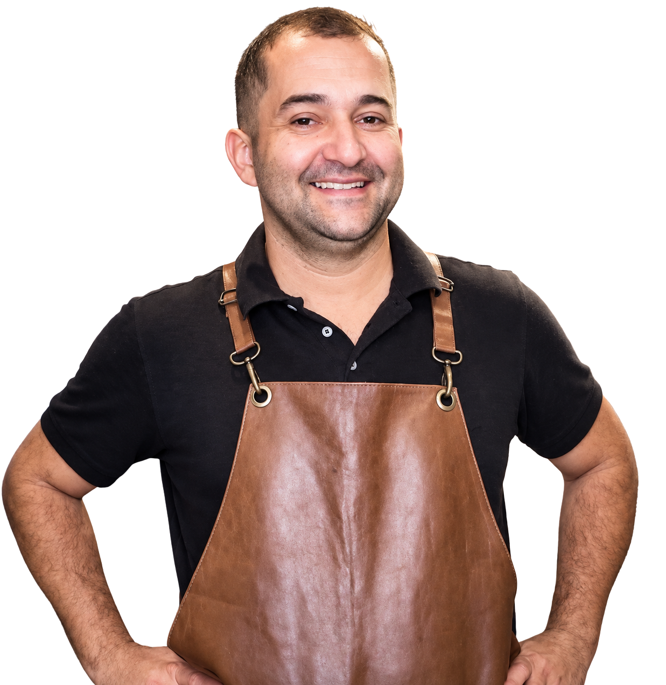
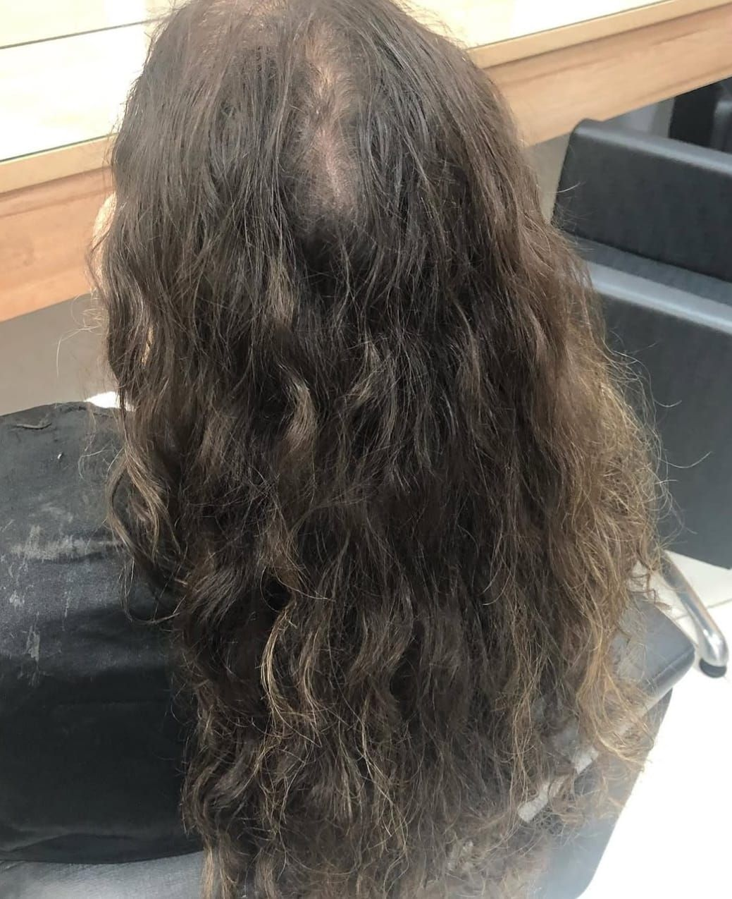
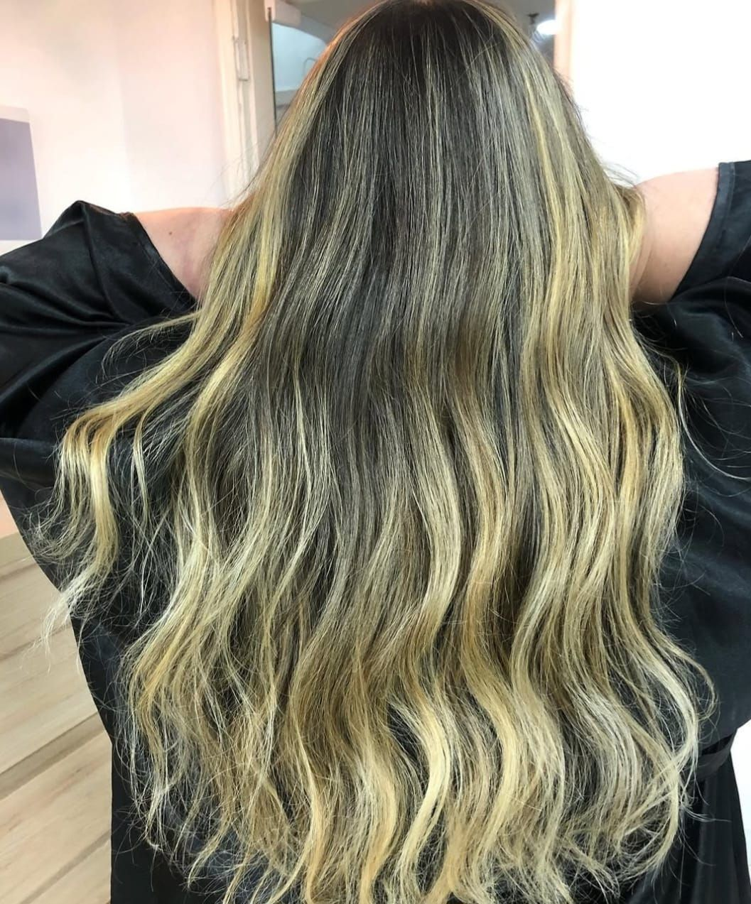
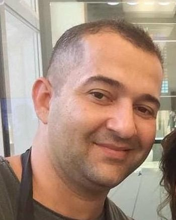
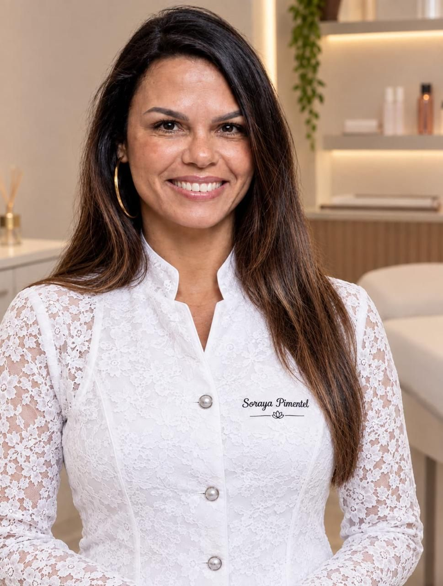
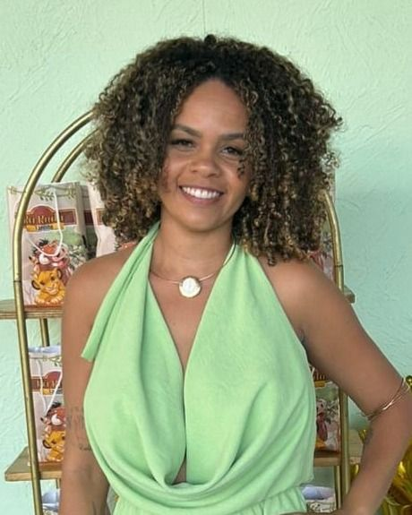
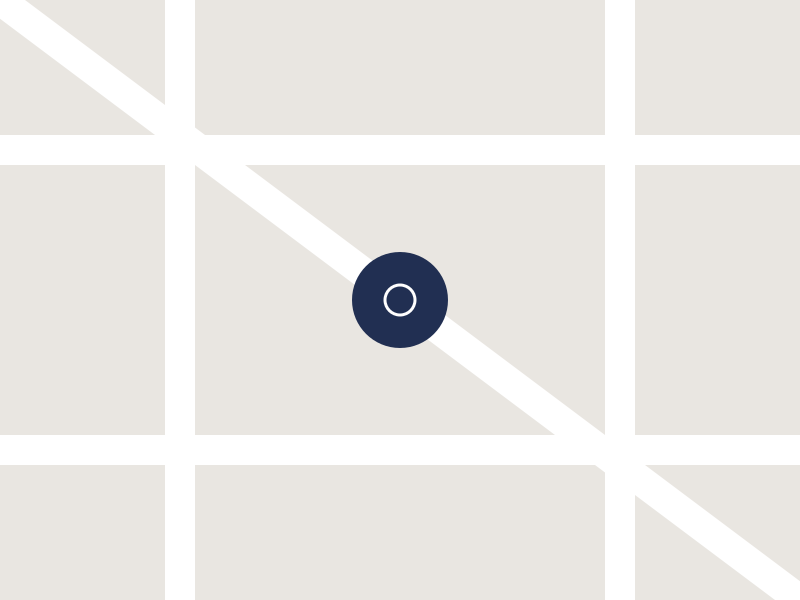

Maquiagem
Produções que realçam sua beleza com técnica, elegância e um acabamento impecável.

Beleza e cuidado em um só lugar. Conte com uma equipe de profissionais especializados em maquiagem, unhas, depilação, sobrancelhas e barbearia, além dos serviços de cabelo com Flávio Barcelos, especialista em loiras, cortes, tratamentos e alisamentos.
Rua México, 119, Sala 201 — Centro, Rio de Janeiro/RJ — CEP 20031-907 · Seg a sáb, 9h às 20h
Antes de qualquer procedimento químico, Flávio avalia as condições do seu cabelo para entender suas necessidades e indicar o tratamento mais adequado. A avaliação pode ser realizada presencialmente ou pelo WhatsApp, trazendo mais segurança e confiança antes de qualquer transformação.


Um espaço pensado para valorizar sua beleza e proporcionar uma experiência completa de cuidado e bem-estar, no coração do Rio desde 2020.
Produções que realçam sua beleza com técnica, elegância e um acabamento impecável.
Manicure, pedicure e alongamento para unhas impecáveis, com técnica, cuidado e acabamento de alto padrão.
Pele macia e bem cuidada, com técnica, conforto e atenção em cada atendimento.
Design preciso e personalizado para destacar o olhar e valorizar a harmonia do rosto.
Cabelos e barba com acabamento preciso para um visual moderno, elegante e bem cuidado.
Cuidado especializado para valorizar a forma, definição e beleza natural dos cabelos cacheados.

Especialista em loiros, cortes, tratamentos e alisamentos.
Saber mais sobre Flávio Barcelos no Instagram (abre em nova aba)Especialista em maquiagem e penteados.
Saber mais sobre Dayana Fitzner no Instagram (abre em nova aba)Especialista em alongamento de unhas.
Saber mais sobre Vitor Coronato no Instagram (abre em nova aba)
Especialista em depilação e design de sobrancelhas.
Saber mais sobre Soraya Pimentel no Instagram (abre em nova aba)
Especialista em cabelos crespos, cacheados e ondulados.
Saber mais sobre Thai Azevedo no Instagram (abre em nova aba)Os agendamentos são realizados pelo WhatsApp. Entre em contato com nossa equipe, escolha o serviço desejado e consulte os horários disponíveis.
Recomendamos o agendamento antecipado para garantir disponibilidade com o profissional desejado.
Consulte nossa equipe pelo WhatsApp para verificar o atendimento de acordo com a idade e o serviço desejado.
O Estúdio aceita pagamentos em dinheiro, cartão ou PIX.
O valor pode variar de acordo com o comprimento, volume, condição atual do cabelo e resultado desejado. Entre em contato para receber uma avaliação mais precisa.
Em caso de imprevistos, pedimos que avise nossa equipe com antecedência. Atrasos podem exigir a alteração do horário para não comprometer os atendimentos seguintes.
Estúdio Flávio Barcelos
Rua México, 119 • Sala 201
Centro — Rio de Janeiro, RJ
WhatsApp: (21) 96926-1188

O mapa do Google só pode ser carregado com a permissão para Conteúdo de terceiros.